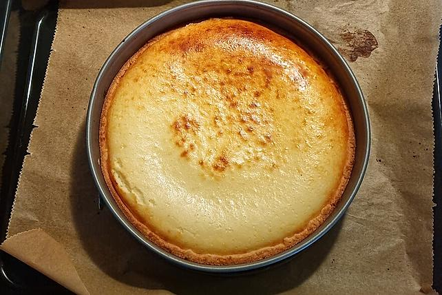

Cheesecake

A beautiful Baked German Cheesecake
Absolutly lovely Baked Cheesecake that is a favorite at friends and family of mine.
Super simple and low hassle recipe. Done in about 2 hours.
Ingredients
For the dough
- 125g Butter of Margarine (soft)
- 125g Sugar
- 250g Flour
- 1 tsp Baking powder
- Pinch of Salt
- 1 Egg
For the filling
- 500g quark
- 1 Egg
- 150g Sugar
- 1 satchel vanilla sugar
- 1 stachel vanilla custard powder
- 3/4 cup vegetable oil
- 2 cups milk
Steps
- Mix together butter, sugar, flour, baking powder, salt and egg to a firm dough.
- Place in round baking pan and press onto bottom and sides. Sides should be 3 - 4cm high.
- Mix together quark, egg, sugar, vanilla sugar, vanilla custard powder, vegetable oil and milk and pour into baking pan
- Place in pre heated oven at 180°C for 1 hour